PostgreSQL Synchronous Commit Effects
Docs
DB1
postgres@bench_db=# \l+ bench_db
List of databases
Name | Owner | Encoding | Collate | Ctype | Access privileges | Size | Tablespace | Description
----------+-----------+----------+-------------+-------------+-------------------+---------+------------+-------------
bench_db | bench_usr | UTF8 | en_US.UTF-8 | en_US.UTF-8 | | 7485 MB | data_tbs |
(1 row)
postgres@bench_db=# \dt+ pgbench_*
List of relations
Schema | Name | Type | Owner | Size | Description
--------+------------------+-------+-----------+---------+-------------
public | pgbench_accounts | table | bench_usr | 6405 MB |
public | pgbench_branches | table | bench_usr | 56 kB |
public | pgbench_history | table | bench_usr | 0 bytes |
public | pgbench_tellers | table | bench_usr | 256 kB |
(4 rows)
postgres@bench_db=# \i table_bloat_check.sql
databasename | schemaname | tablename | can_estimate | est_rows | pct_bloat | mb_bloat | table_mb
--------------+------------+------------------+--------------+----------+-----------+----------+----------
bench_db | public | pgbench_history | f | 0 | | | 0.000
bench_db | public | pgbench_accounts | t | 50000000 | 1 | 94.04 | 6403.695
bench_db | public | pgbench_branches | t | 500 | 0 | 0.00 | 0.023
bench_db | public | pgbench_tellers | t | 5000 | 0 | 0.00 | 0.219
(4 rows)
postgres@bench_db=# \i index_bloat_check.sql
database_name | schema_name | table_name | index_name | bloat_pct | bloat_mb | index_mb | table_mb | index_scans
---------------+-------------+------------------+-----------------------+-----------+----------+----------+----------+-------------
bench_db | public | pgbench_branches | pgbench_branches_pkey | 25 | 0 | 0.031 | 0.023 | 0
bench_db | public | pgbench_tellers | pgbench_tellers_pkey | 13 | 0 | 0.125 | 0.219 | 0
bench_db | public | pgbench_accounts | pgbench_accounts_pkey | 11 | 115 | 1071.086 | 6403.695 | 0
(3 rows)
Test #1: synchronous_commit = on
pgbench -h /tmp -p 5432 -c 30 -j 6 -P 60 -T 900 --no-vacuum bench_db
progress: 60.0 s, 1897.2 tps, lat 15.790 ms stddev 9.803
progress: 120.0 s, 1779.3 tps, lat 16.775 ms stddev 37.330
progress: 180.0 s, 1040.9 tps, lat 28.921 ms stddev 31.144
progress: 240.0 s, 1314.0 tps, lat 22.839 ms stddev 26.320
progress: 300.0 s, 1224.2 tps, lat 24.348 ms stddev 40.110
progress: 360.0 s, 1234.2 tps, lat 24.453 ms stddev 23.195
progress: 420.0 s, 1413.4 tps, lat 21.220 ms stddev 18.484
progress: 480.0 s, 1274.5 tps, lat 23.527 ms stddev 35.931
progress: 540.0 s, 1320.0 tps, lat 22.723 ms stddev 21.668
progress: 600.0 s, 1394.4 tps, lat 21.508 ms stddev 23.690
progress: 660.0 s, 1213.3 tps, lat 24.711 ms stddev 39.795
progress: 720.0 s, 1419.6 tps, lat 21.128 ms stddev 31.971
progress: 780.0 s, 1378.9 tps, lat 21.743 ms stddev 28.420
progress: 840.0 s, 1218.9 tps, lat 24.601 ms stddev 35.285
progress: 900.0 s, 1538.2 tps, lat 19.503 ms stddev 17.747
transaction type:
scaling factor: 500
query mode: simple
number of clients: 30
number of threads: 6
duration: 900 s
number of transactions actually processed: 1239686
latency average = 21.771 ms
latency stddev = 29.064 ms
tps = 1377.205277 (including connections establishing)
tps = 1377.222087 (excluding connections establishing
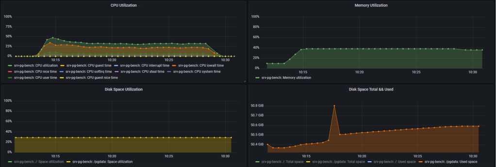
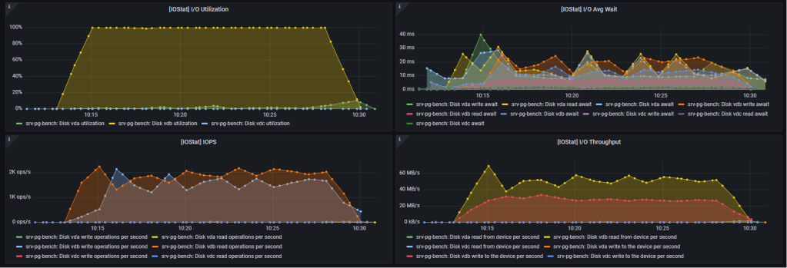
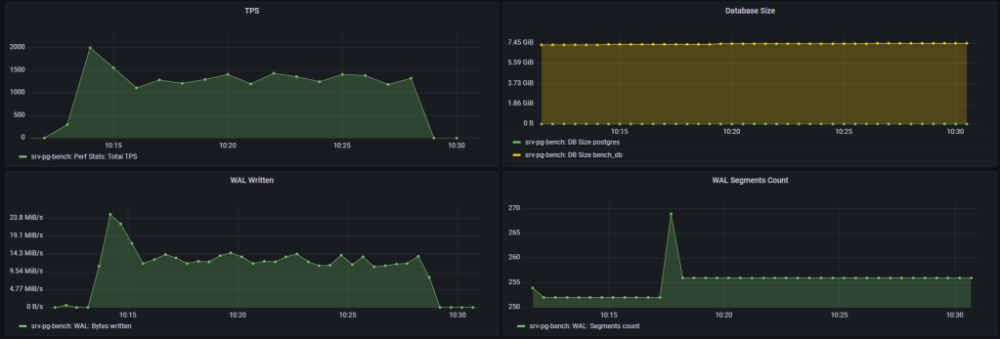
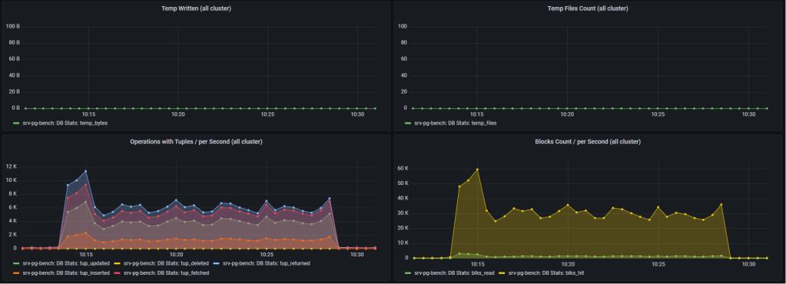
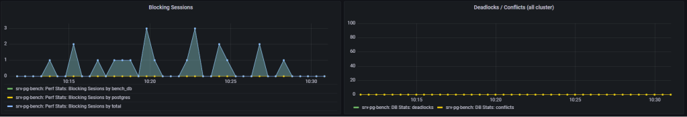
Test #2: synchronous_commit = off
pgbench -h /tmp -p 5432 -c 30 -j 6 -P 60 -T 900 --no-vacuum bench_db
progress: 60.0 s, 2261.9 tps, lat 13.255 ms stddev 13.053
progress: 120.0 s, 2007.2 tps, lat 14.934 ms stddev 34.489
progress: 180.0 s, 1320.4 tps, lat 22.730 ms stddev 36.629
progress: 240.0 s, 1659.4 tps, lat 18.084 ms stddev 27.004
progress: 300.0 s, 1466.2 tps, lat 20.452 ms stddev 35.495
progress: 360.0 s, 1292.6 tps, lat 23.210 ms stddev 37.436
progress: 420.0 s, 1766.0 tps, lat 16.989 ms stddev 24.702
progress: 480.0 s, 1445.2 tps, lat 20.751 ms stddev 36.917
progress: 540.0 s, 1350.7 tps, lat 22.204 ms stddev 35.056
progress: 600.0 s, 1737.9 tps, lat 17.262 ms stddev 25.479
progress: 660.0 s, 1489.3 tps, lat 20.146 ms stddev 37.570
progress: 720.0 s, 1369.2 tps, lat 21.900 ms stddev 35.668
progress: 780.0 s, 1684.6 tps, lat 17.818 ms stddev 27.789
progress: 840.0 s, 1568.9 tps, lat 19.117 ms stddev 34.174
progress: 900.0 s, 1352.7 tps, lat 22.178 ms stddev 39.113
transaction type:
scaling factor: 500
query mode: simple
number of clients: 30
number of threads: 6
duration: 900 s
number of transactions actually processed: 1426362
latency average = 18.929 ms
latency stddev = 32.110 ms
tps = 1584.600394 (including connections establishing)
tps = 1584.607244 (excluding connections establishing)
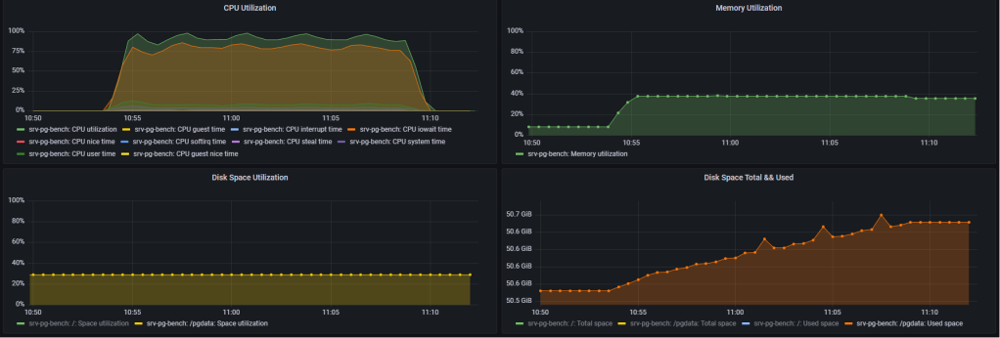
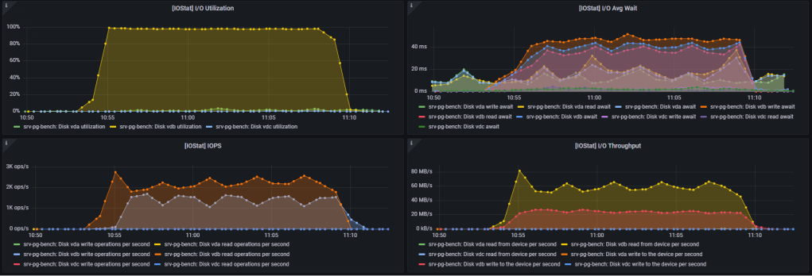
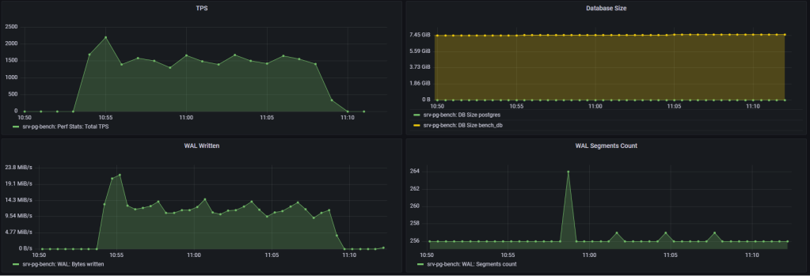
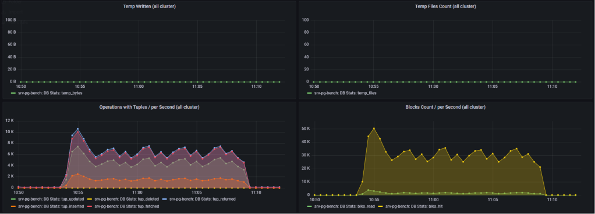
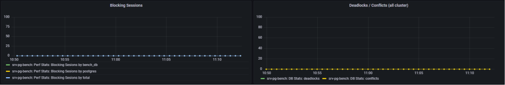
DB2
postgres@bench_db=# \l+ bench_db
List of databases
Name | Owner | Encoding | Collate | Ctype | Access privileges | Size | Tablespace | Description
----------+-----------+----------+-------------+-------------+-------------------+---------+------------+-------------
bench_db | bench_usr | UTF8 | en_US.UTF-8 | en_US.UTF-8 | | 1010 MB | pg_default |
(1 row)
postgres@bench_db=# \i table_bloat_check.sql
databasename | schemaname | tablename | can_estimate | est_rows | pct_bloat | mb_bloat | table_mb
--------------+------------+------------------+--------------+----------+-----------+----------+----------
bench_db | public | pgbench_history | f | 0 | | | 0.000
bench_db | public | pgbench_accounts | t | 6700000 | 1 | 12.60 | 858.102
bench_db | public | pgbench_branches | t | 67 | 0 | 0.00 | 0.008
bench_db | public | pgbench_tellers | t | 670 | 0 | 0.00 | 0.031
(4 rows)
postgres@bench_db=# \i index_bloat_check.sql
database_name | schema_name | table_name | index_name | bloat_pct | bloat_mb | index_mb | table_mb | index_scans
---------------+-------------+------------------+-----------------------+-----------+----------+----------+----------+-------------
bench_db | public | pgbench_tellers | pgbench_tellers_pkey | 25 | 0 | 0.031 | 0.031 | 0
bench_db | public | pgbench_accounts | pgbench_accounts_pkey | 11 | 15 | 143.547 | 858.102 | 0
bench_db | public | pgbench_branches | pgbench_branches_pkey | 0 | 0 | 0.016 | 0.008 | 0
(3 rows)
Test #3: synchronous_commit = on
pgbench -h /tmp -p 5432 -c 30 -j 6 -P 60 -T 900 --no-vacuum bench_db
progress: 60.0 s, 4058.0 tps, lat 7.382 ms stddev 4.925
progress: 120.0 s, 4190.4 tps, lat 7.150 ms stddev 5.063
progress: 180.0 s, 3475.0 tps, lat 8.625 ms stddev 6.965
progress: 240.0 s, 4845.0 tps, lat 6.183 ms stddev 2.672
progress: 300.0 s, 4820.3 tps, lat 6.214 ms stddev 2.703
progress: 360.0 s, 5003.5 tps, lat 5.987 ms stddev 2.629
progress: 420.0 s, 4769.9 tps, lat 6.281 ms stddev 2.723
progress: 480.0 s, 4827.6 tps, lat 6.205 ms stddev 2.719
progress: 540.0 s, 4829.3 tps, lat 6.203 ms stddev 2.717
progress: 600.0 s, 4835.3 tps, lat 6.195 ms stddev 2.708
progress: 660.0 s, 4472.9 tps, lat 6.698 ms stddev 2.994
progress: 720.0 s, 4700.5 tps, lat 6.373 ms stddev 3.497
progress: 780.0 s, 4818.9 tps, lat 6.217 ms stddev 3.420
progress: 840.0 s, 4635.6 tps, lat 6.462 ms stddev 3.451
progress: 900.0 s, 4807.4 tps, lat 6.231 ms stddev 3.362
transaction type:
scaling factor: 67
query mode: simple
number of clients: 30
number of threads: 6
duration: 900 s
number of transactions actually processed: 4145394
latency average = 6.504 ms
latency stddev = 3.631 ms
tps = 4605.422270 (including connections establishing)
tps = 4605.441729 (excluding connections establishing)
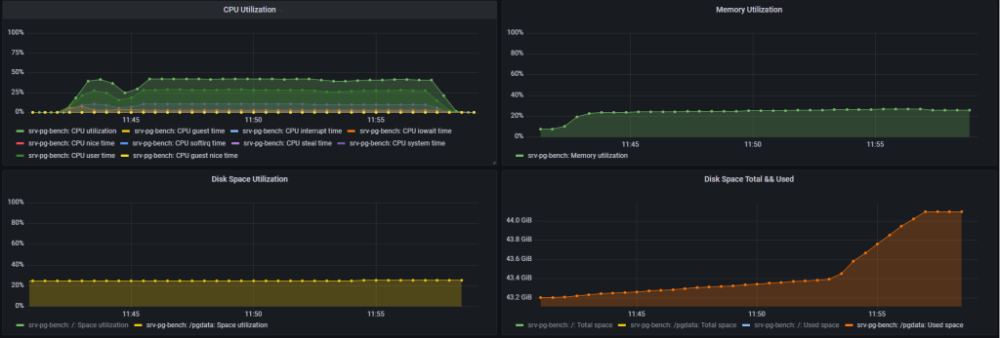
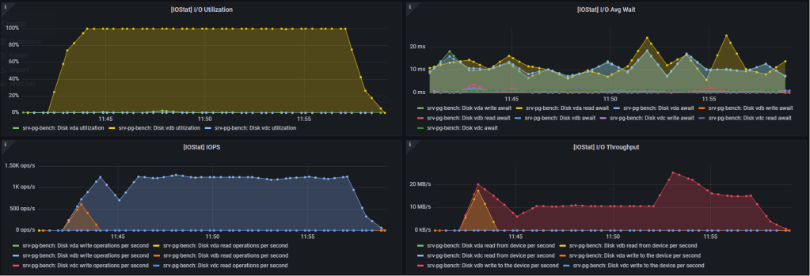
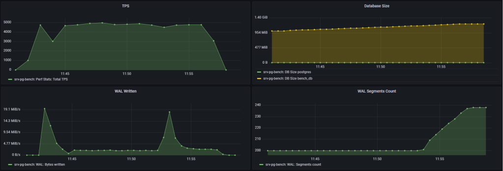
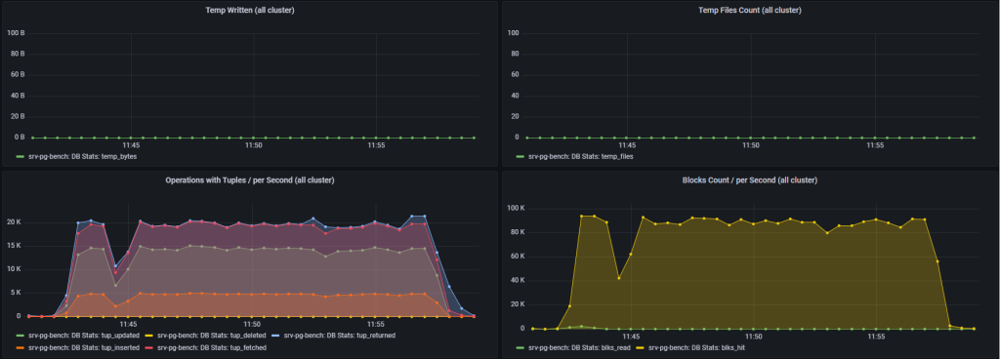
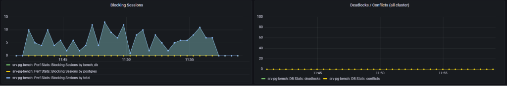
Test #4: synchronous_commit = off
progress: 60.0 s, 9470.9 tps, lat 3.160 ms stddev 4.439
progress: 120.0 s, 11634.4 tps, lat 2.571 ms stddev 2.045
progress: 180.0 s, 11799.1 tps, lat 2.535 ms stddev 0.661
progress: 240.0 s, 11436.5 tps, lat 2.616 ms stddev 0.641
progress: 300.0 s, 11581.4 tps, lat 2.583 ms stddev 3.627
progress: 360.0 s, 11512.7 tps, lat 2.599 ms stddev 0.704
progress: 420.0 s, 11672.4 tps, lat 2.562 ms stddev 1.068
progress: 480.0 s, 11867.1 tps, lat 2.520 ms stddev 0.677
progress: 540.0 s, 11773.1 tps, lat 2.541 ms stddev 0.816
progress: 600.0 s, 11405.6 tps, lat 2.623 ms stddev 0.677
progress: 660.0 s, 11804.1 tps, lat 2.534 ms stddev 0.729
progress: 720.0 s, 11820.1 tps, lat 2.530 ms stddev 0.701
progress: 780.0 s, 11689.8 tps, lat 2.559 ms stddev 2.947
progress: 840.0 s, 11635.1 tps, lat 2.572 ms stddev 0.674
progress: 900.0 s, 11832.6 tps, lat 2.528 ms stddev 0.748
transaction type:
scaling factor: 67
query mode: simple
number of clients: 30
number of threads: 6
duration: 900 s
number of transactions actually processed: 10376133
latency average = 2.595 ms
latency stddev = 1.807 ms
tps = 11527.846946 (including connections establishing)
tps = 11527.895835 (excluding connections establishing)
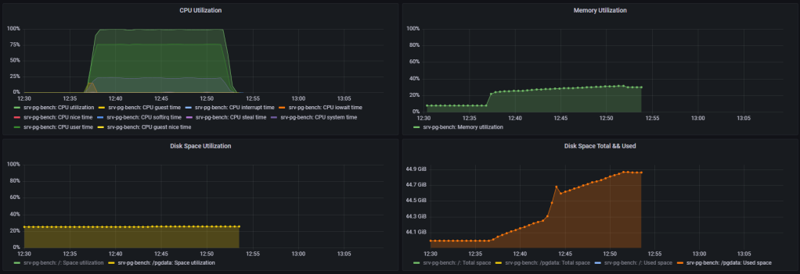
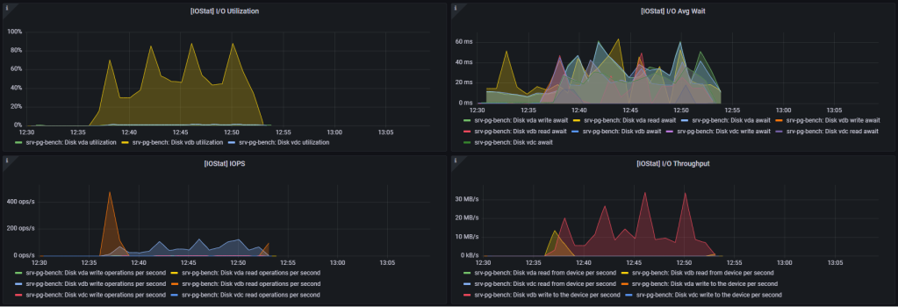
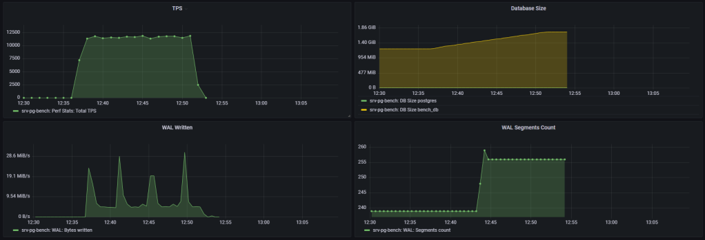
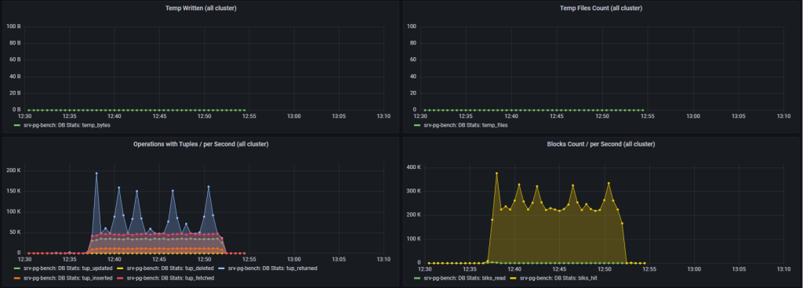
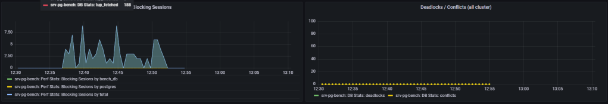
Summary
Setting synchronous_commit = off will:
- Increase database transactions throughput (TPS)
- Increase CPU usage
- Will NOT decrease CPU iowaits
About Data Loss
Ref. to Percona blog post:
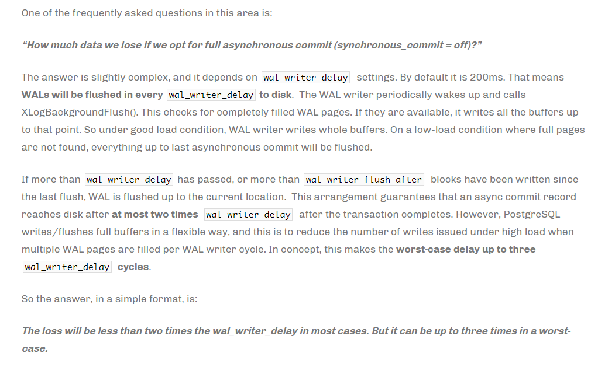